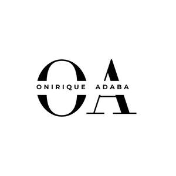
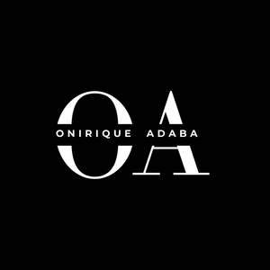

Trade Mark Journal No.2025/033 15 August 2025
UK00004243438 2 August 2025 (20,21,25)
Mark 1

Mark 2

- Class 20
- Picture frame mouldings; Picture frame brackets; Brackets (Picture frame -); Frames; Picture frame moldings; Picture frames; Frames (Picture -); Frames (Picture -) of metal; Mirror frames; Mouldings for picture frames; Picture rods [frames]; Moldings for picture frames; Photograph frames; Photo frames; Display frames; Photograph frames of metal; Bed frames; Photograph frames of wood; Carved picture frames; Leather picture frames; Paper picture frames; Bed frames of metal; Mouldings made of wood for picture frames; Picture and photograph frames; Moldings [mouldings] for picture frames; Picture frames (Moldings [mouldings] for -); Frames for mirrors; Picture frames of precious metal; Picture holders [frames]; Frames for pictures; Kneeling frames; Embroidery frames; Frames (Embroidery -); Mouldings made of plastics for picture frames; Frames for display boards; Furniture frames; Frames (Picture -) of non-metallic materials; Picture frames [not of precious metal]; Display frames of metal [furniture]; Brackets (Non-metallic -) for frames; Frames for photographs; Mouldings made of substitutes of wood for picture frames; Frames for bed canopies; Mounts [frames] for photographs; Wooden picture mouldings; Chairs on skid frames; Frames for signboards; Furniture for shops; Shop furniture; Pouffes [furniture]; Stationery cabinets [furniture]; Furniture and furnishings; Cupboards being furniture; Kitchen furniture; Shelves being nursery furniture; Consignment shelving [furniture]; Furniture; Nursery furniture; Cushions [furniture]; Units [furniture] for the display of stationery; Kitchen dressers [furniture]; Garden furniture; Furniture shelves; Shelves [furniture]; Furniture for kitchens; Furniture for displaying goods; Canteen furniture; Clothes racks [furniture]; Trolleys [furniture]; Metal furniture and furniture for camping; Shop furniture for use in displaying cards; Bamboo furniture; Arbours [furniture]; Potato bins [furniture]; Fitted kitchen furniture; Furniture for caravans; Bean bags; Corks for bottles; Bottles (Corks for -); Plastic stoppers for bottles; Bottle racks; Non-metal caps for bottles; Non-metallic caps and closures for bottles and for containers; Bottle crates [other than of metal]; Cases (Non-metallic -) for bottles; Non-metallic bottle caps; Non-metal bottle caps; Corks for containers; Closures (Non-metallic -) for bottles; Bottle rails; Stoppers for bottles, not of glass, metal or rubber; Cap closures (Non-metallic -) for bottles; Inflatable publicity balloons; Advertising balloons; Floating inflatable seats; Inflatable publicity objects; Bottles [containers], not of metal, for compressed gas or liquid air; Clothes covers; Seat covers [shaped] for furniture; Covers (Shaped -) for furniture; Protective covers for furniture [shaped]; Pillows; Fitted fabric furniture covers; Removable mats or covers for sinks; Sinks (Removable mats or covers for -); Removable covers for sinks; Fitted crib rail covers; Protective covers for furniture [fitted]; Textile covers [shaped] for furniture; Stuffed pillows; Clothes hangers, clothes stands [furniture] and clothes hooks; Infant beds; Portable infant beds; Mats for infant playpens; Infant playpens (Mats for -); Playpens (Mats for infant -); Infant walkers; Cots for babies; Cribs for babies; Electric baby cradles; Playpens for babies; Mattresses [other than child birth mattresses]; Furniture for babies; Bedding for nursery cots [other than bed linen]; Spring mattresses; Mattresses (Spring -); Spring locks (Non-metallic -); Air mattresses for use when camping; Spring washers of plastic; Spring rings of plastic; Plastic caps; Caps (Non-metallic -) for screws; Caps, not of metal (Bottle -); Bottle caps, not of metal; Screw caps, not of metal; Non-metallic sealing caps; Caps, not of metal (Sealing -); Sealing caps, not of metal; Self-locking protective plastic caps for use with bolts; Decorative nut caps [non-metallic]; Self-locking protective plastic caps for use with nuts; Composite caps of non-metallic materials for closing bottles; Caps made of non-metallic materials for containers; Cap closures (Non-metallic -) for containers; Screw tops, not of metal, for bottles; Corner cap components, not of metal; Composite caps for containers [non-metallic and not for household or kitchen use]; Metal hat racks; Screw cups, not of metal; Clear plastic holders for badges; Dish cabinets; Plastic suction cups; Plastic novelty license plates.
- Class 21
- Mugs; Glass mugs; Beer mugs; Cups and mugs; Ceramic mugs; Flasks; Coffee mugs; Earthenware mugs; Insulated bottles [flasks]; Porcelain mugs; Mugs of porcelain; Glass flasks; Insulated mugs; Liqueur flasks; Mug cosies; Glass flasks [containers]; Insulated flasks; Mug racks; China mugs; Mugs of china; Vacuum mugs; Drinking flasks; Drinking mugs made of porcelain; Vacuum bottles [insulated flasks]; Travel mugs; Mug sleeves; Mugs made of earthenware; Insulating flasks; Mugs made of porcelain; Vacuum flasks for holding drinks; Pint tankards; Tankards; Mugs made of plastic; Drinking flasks for travellers; Drinking flasks [for travellers]; Flasks for travellers (Drinking -); Hip flasks; Stirrers (Drink -); Mugs made of china; Vacuum flask cookers; Coffee stirrers; Glass cups; Mugs made of ceramic materials; Flasks for travellers; Tea cups; Mugs of precious metal; Beverage stirrers; Pewter tankards; Tea canisters; Coffee pots; Insulating sleeve holder for beverage cups; Beer jugs; Liqueur cups; Coffee cups; Drinkware; Mug trees; Tea pots; Glass decanters; Glass carafes; Tumblers for use as drinking glasses; Beverage glassware; Vacuum flasks; Glass pots; Bottle pourers; Glass stoppers for bottles; Glass bottles; Pint glasses; Beer glasses; Bottle coolers; Porcelain coasters; Beer steins; Decanters; Cup lids; Thermal insulated tote bags for food or beverages; Insulating sleeve holders for beverage cans; Coasters (tableware); Carafes; Bottles; Glasses, drinking vessels and barware; Tea cosies; Cosies (Tea -); Prize cups of porcelain, ceramic, earthenware, terra-cotta or glass; Tea strainers; Tea infusers; Bottle coolers [receptacles]; Schnapps glasses; Wine jugs; Reusable stainless steel water bottles; Whisky glasses; Tea urns (Non-electric -); Drip mats for tea; Coffee pots [non-electric]; Non-electric coffee pots; Dispensers for liquids for use with bottles; Commemorative statuary cups of porcelain, ceramic, earthenware, terra-cotta or glass; Beverage urns, non-electric; Reusable stainless steel water bottles sold empty; Glass bowls; Bowls (Glass -); Drinking steins; Vacuum flasks for holding food; Beverage coolers [containers]; Drinks containers; Wine decanters; Foam drink holders; Insulated lids for plates and dishes; Drinking glass holders; Teacups (yunomi); Teacups [yunomi]; Jars (Glass -) [carboys]; Glass jars [carboys]; Cups; Mugs made of fine bone china; Shoe cloths; Brushes for footwear; Footwear (Brushes for -); Articles for the care of clothing and footwear; Tableware; Crockery; Coffee services [tableware]; Ceramic tableware; Tableware of porcelain; Tableware, cookware and containers; Oven-to-table tableware; Cooking utensils; Griddles [cooking utensils]; Grills [cooking utensils]; Cooking utensils, non-electric; Basting spoons [cooking utensils]; Cooking utensils for barbecue use; Baking utensils; Non-electric griddles [cooking utensils]; Griddles [non-electric cooking utensils]; Kitchen utensils; Cooking utensils for use with domestic barbecues; Grills in the nature of cooking utensils; Simmer rings [cooking utensils]; Skewers (cooking utensil); Spatulas [kitchen utensils]; Tenderizers [kitchen utensils]; Wire baskets [cooking utensils]; Cooking pans; Cooking pots; Household or kitchen utensils; Mixing spoons [kitchen utensils]; Cooking graters; Dishes [household utensils]; Moulds [kitchen utensils]; Molds [kitchen utensils]; Cooking pans [non-electric]; Non-electric cooking pans; Cooking pots [non-electric]; Cooking strainers; Kitchen utensils of silicon; Cooking pots and pans [non-electric]; Non-electric cooking pots and pans; Non-electric rice cooking pots; Cooking pots for use in microwave ovens; Cooking pots, non-electric / Non-electric cooking pots; Cooking sieves; Couscous cooking pots, non-electric; Household utensils; Cooking steamers; Non-electric pressure cooking saucepans; Pressure cooking saucepans, non-electric; Skewers for use in cooking; Cooking skewers; Presses (Garlic -) [kitchen utensils]; Garlic presses [kitchen utensils]; Egg separators [kitchen utensils]; Microwave cooking bags; Bags for microwave cooking; Skewers [cooking implements]; Tortilla presses, non-electric [kitchen utensils]; Paper cooking pots; Aluminium moulds [kitchen utensils]; Graters [household utensils]; Sieves [household utensils]; Flat cooking ladles; Non-electric cooking steamers; Baking dishes; Laundry balls for use as household utensils; Trivets [table utensils]; Turners (kitchen utensil); Cooking skewers of metal; Serving scoops [household or kitchen utensil]; Kitchen utensils, not of precious metal; Cosmetic utensils; Bota bags; Pastry bags; Piping bags ; Isothermic bags; Perfume bottles; Plastic bottles; Water bottles; Drinking bottles; Reusable bottles; Plastic water bottles; Bottle buckets; Refrigerating bottles; Bottles (Refrigerating -); Plastic water bottles [empty]; Empty spray bottles; Water bottles for bicycles; Biobased bottles; Empty water bottles for bicycles; Vacuum pumps for wine bottles; Perfume bottles sold empty; Vacuum bottles; Water bottles sold empty; Bottle gourds; Gourds (Bottle -); Soap dispensing bottles; Aluminum water bottles; Reusable plastic water bottles sold empty; Wine bottle cradles; Water bottles for bicycles, sold empty; Covers for water bottles; Aluminum water bottles, empty; Bottles, sold empty; Stands for bottles; Sports bottles [empty]; Bottle brushes; Brushes for feeding bottles; Bottles for pharmaceuticals sold empty; Bottle openers; Shaker bottles sold empty; Squeeze bottles, empty; Bottle cradles; Drinking bottles for sports; Siphon bottles for carbonated water; Sports bottles sold empty; Drip preventers for bottles; Smart medicine bottles, empty; Siphon bottles for aerated water; Decorative sand bottles; Smart medicine bottles, sold empty; Insulated vacuum bottles; Glass jars; Feeding bottle brushes; Brushes for feeding bottle teats; Glass vials [receptacles]; Heaters for feeding bottles, non-electric; Non-electric heaters for feeding bottles; Feeding bottles (Heaters for -), non-electric; Glass containers; Paper plates; Plates (Paper -); Dish covers; Covers for dishes; Tissue box covers; Cheese covers; Covers for tissue boxes; Ceramic tissue box covers; Flower-pot covers, not of paper; Cheese-dish covers; Butter-dish covers; Trouser stretchers; Feeding cups for children; Baby baths; Cold packs used to keep food and drink cold; Cold packs for chilling food and beverages; Thermal insulated wrap for cans to keep the contents cold or hot; Glass caps; Dish cloths; Dish drainers; Dishes; Gratin dishes; Soufflé dishes; Dish brushes; Dish stands; Soap dishes; Dishes for soap; Casseroles [dishes]; Vegetable dishes; Relish dishes; Serving dishes; Butter dishes; Dishes (Butter -); Dish drying racks; Roasting dishes; Wall soap dishes; Potpourri dishes; Glass dishes; Baking dishes made of earthenware; Candy dishes; Jewelry dishes; Baking dishes made of porcelain; Baking dishes made of glass; Soap dispensing dish brushes; Dishes for microwave ovens; Dishcloths for washing dishes; Plastic plates [dishes]; Fireproof dishes; Shaving dishes; Dessert plates; Stands for dishes; Salad bowls; Soup bowls; Pet feeding dishes; Services [dishes]; Meal trays; Squeegees for dishes; Japanese style soup serving bowls (wan); Pasta serving forks; Tableware, other than knives, forks and spoons; Plates; Plastic cups; Tableware, except forks, knives and spoons; Demitasse sets comprised of cups and saucers; Plastic plates; Cookware and tableware, except forks, knives and spoons; Cardboard cups; Glass plates; Serving spoons; Cutlery trays; Table plates (Disposable -); Table plates; Compostable plates; Cookware, except forks, knives and spoons; Compostable cups; Sippy cups; Slotted spoons; Cake plates; Paper cups; Basting spoons; Fruit cups; Cups (Fruit -); Cups of paper or plastic; Plastic bowls [basins]; Mixing cups; Cups made of earthenware; Egg cups; Cups (Egg -); Mixing spoons; Jam spoons; Souvenir plates; Drinking cups; Feeding cups; Cups made of china; Decorative plates; Biodegradable cups; Cups made of pottery; Biodegradable plates; Bowls; Cups of precious metal; Commemorative plates; Utensil jars; Paper baking cups; Baking cups of paper; Scoops [tableware]; Egg cups of precious metal; Silicone baking cups; Suction bowls; Compostable bowls; Basins [bowls]; Bowls [basins]; Plastic bowls [household containers]; Goblets; Cups made of plastics; Sake cups; Fruit bowls of glass; Sugar bowls; Basting spoons, for kitchen use; Spoons (Basting -), for kitchen use; Cupcake baking cups.
- Class 25
- Clothing; Knitwear [clothing]; Jackets [clothing]; Ready-to-wear clothing; Woolen clothing; Furs [clothing]; Garments for protecting clothing; Layettes [clothing]; Clothing layettes; Linen clothing; Headbands [clothing]; Headbands for clothing; Gloves [clothing]; Gloves as clothing; Clothes; Aprons [clothing]; Maternity clothing; Kerchiefs [clothing]; Jerseys [clothing]; Denims [clothing]; Shorts [clothing]; Cashmere clothing; Capes (clothing); Oilskins [clothing]; Gabardines [clothing]; Silk clothing; Leather clothing; Clothing of leather; Leather (Clothing of -); Collars [clothing]; Parts of clothing, footwear and headgear; Knitted clothing; Veils [clothing]; Windproof clothing; Hoods [clothing]; Corsets [clothing, foundation garments]; Embroidered clothing; Wristbands [clothing]; Bandeaux [clothing]; Belts [clothing]; Belts for clothing; Rainproof clothing; Waterproof clothing; Casual clothing; Visors [clothing]; Jackets being sports clothing; Jackets (Stuff -) [clothing]; Stuff jackets [clothing]; Bottoms [clothing]; Playsuits [clothing]; Ready-made clothing; Clothing for leisure wear; Latex clothing; Infant clothing; Woven clothing; Trunks being clothing; Leisure clothing; Clothing for sports; Sports clothing; Drawers [clothing]; Drawers as clothing; Ties [clothing]; Athletic clothing; Clothing for children; Muffs [clothing]; Bodies [clothing]; Clothing for babies; Tops [clothing]; Clothing for infants; Clothing for cycling; Weatherproof clothing; Fabric belts [clothing]; Pockets for clothing; Water-resistant clothing; Triathlon clothing; Handwarmers [clothing]; Clothing for skiing; Beach clothing; Thermal clothing; Chaps (clothing); Cowls [clothing]; Men's clothing; Fishing clothing; Mitts [clothing]; Dance clothing; Braces for clothing; Footwear; Insoles for footwear; Footwear soles; Soles for footwear; Sneakers [footwear]; Flip-flops for use as footwear; Footwear [excluding orthopedic footwear]; Insoles [for shoes and boots]; Insoles for shoes and boots; Wooden shoes [footwear]; Rubbers [footwear]; Shoes; Footwear uppers; Uppers (Footwear -); Esparto shoes or sandles; Shoe soles; Casual footwear; Mountaineering shoes; Climbing footwear; Trainers [footwear]; Beach footwear; Non-slipping devices for footwear; Footwear (Non-slipping devices for -); Leisure footwear; Athletic footwear; Pumps [footwear]; Inner socks for footwear; Footwear for sport; Footwear for use in sport; Shoes soles for repair; Slip-on shoes; Esparto shoes or sandals; Welts for footwear; Footwear (Welts for -); Rubber shoes; Fittings of metal for boots and shoes; Waterproof shoes; Shoes for leisurewear; Footwear for women; Leather shoes; Sandals and beach shoes; Fishing footwear; Shoes for casual wear; High-heeled shoes; Footwear for men; Footwear for snowboarding; Hiking shoes; Cycling shoes; Shoe soles for repair; Leisure shoes; Insoles; Footwear for sports; Sports footwear; Apres-ski shoes; Athletics footwear; Tips for footwear; Footwear (Tips for -); Tongues for shoes and boots; Walking shoes; Jogging shoes; Yoga shoes; Pullstraps for shoes and boots; Fittings of metal for footwear; Footwear (Fittings of metal for -); Climbing boots [mountaineering boots]; Athletic shoes; Mountaineering boots; Trekking boots; Soles for japanese style sandals; Sport shoes; Shoe straps; Golf footwear; Beach shoes; Gymnastic shoes; Training shoes; Boots; Heelpieces for footwear; Infants' footwear; Toe straps for Japanese style sandals [zori]; Toe straps for zori [Japanese style sandals]; Children's footwear; Knitwear; Menswear; Nightwear; Hoodies; Sweatshirts; Hooded sweatshirts; T-shirts; Hooded sweat shirts; Shirts; Short-sleeved T-shirts; Turtleneck shirts; Hooded pullovers; Long-sleeved shirts; Beanies; Short-sleeve shirts; Camouflage shirts; Short-sleeved shirts; Tee-shirts; Fleece jackets; Corduroy shirts; Tracksuits; V-neck sweaters; Collared shirts; Shirts for suits; Sleeved jackets; Sweat shirts; Sleeveless jackets; Beanie hats; Sweaters; Sweatpants; Jackets; Open-necked shirts; Fleece pullovers; Knit shirts; Men's and women's jackets, coats, trousers, vests; Mock turtleneck shirts; Cardigans; Turtleneck pullovers; Yoga shirts; Snowboard jackets; Denim jackets; Turtleneck sweaters; Balaclavas; Sports shirts; Tank-tops; Camouflage jackets; Turtlenecks; Knit jackets; Dress shirts; Pullovers; Casual shirts; Sleeveless pullovers; Parkas; Moisture-wicking sports shirts; Bandanas; Fleece shorts; Sweat jackets; Maternity shirts; Anoraks [parkas]; Jumpers [sweaters]; Quilted jackets [clothing]; Printed t-shirts; Sport shirts; Sleeveless jerseys; Jumpers [pullovers]; Hooded tops; Fleece vests; Overshirts; Hunting shirts; Polar fleece jackets; Polo shirts; Night shirts; Golf shirts; Sports shirts with short sleeves; Sheepskin jackets; Leggings [trousers]; Polo sweaters; Jumpsuits; Blouson jackets; Football shirts; Rugby shirts; Mock turtleneck sweaters; Windcheaters; Casual jackets; Woven shirts; Sweatsuits; Aloha shirts; Fur coats and jackets; Sports jackets; Fleece tops; Fishing shirts; Tennis shirts; Overcoats; Bandanas [neckerchiefs]; Cashmere scarves; Scarfs; Waistcoats [vests]; Stuff jackets; Hats; Fur jackets; Bandannas; Tracksuit bottoms; Jeans; Pique shirts; Windproof jackets; Ramie shirts; Bomber jackets; Under shirts; Party hats [clothing]; Toques [hats]; Blazers; Mufflers [clothing]; Collars for dresses; Gloves for apparel; Jerseys; Wind-resistant jackets; Padded jackets; Weatherproof jackets; Dresses; Bridesmaid dresses; Pinafore dresses; Wedding dresses; Maternity dresses; Cocktail dresses; Jumper dresses; Leather dresses; Dresses for evening wear; Evening dresses; Nurse dresses; Tennis dresses; Gowns; Shift dresses; Dress shoes; Bridal gowns; Ladies' dresses; Dress pants; Dress suits; Fancy dress costumes; Wedding gowns; Blouses; Dressing gowns; Dresses made from skins; Women's ceremonial dresses; Pleated skirts for formal kimonos (hakama); Cheongsams (Chinese gowns); Bridesmaids wear; Skirt suits; Imitation leather dresses; Christening gowns; Bodices [lingerie]; Skirts; Men's dress socks; Sundresses; Nightgowns; Pleated skirts; Culotte skirts; Frock coats; Romper suits; Strapless bras; Skating outfits; Bridal garters; Dresses for infants and toddlers; Strapless brassieres; Costumes for use in children's dress up play; Petticoats; Caftans; Night gowns; Ladies wear; Sashes for wear; Tunics; Tuxedos; Nightdresses; Kimonos; Kaftans; Camisoles; Babies' pants [clothing]; Ball gowns; Bathing costumes for women; Fashion hats; Underskirts; Gussets for bathing suits [parts of clothing]; Foulards [clothing articles]; Wedding garters; Gussets for leotards [parts of clothing]; Capelets; Jogging outfits; Kendo outfits; Costumes; Bra straps [parts of clothing]; Boas [clothing]; Trousers; Trousers shorts; Corduroy trousers; Trousers of leather; Waterproof trousers; Pants; Casual trousers; Corduroy pants; Trousers for sweating; Short trousers; Ski trousers; Rain trousers; Denim pants; Riding trousers; Snowboard trousers; Golf trousers; Trouser socks; Chino pants; Trousers for children; Nappy pants [clothing]; Leather pants; Camouflage pants; Capri pants; Infants' trousers; Dungarees; Waterproof pants; Slacks; Pantaloons; Trouser straps; Horse-riding pants; Maternity pants; Weatherproof pants; Babies' pants [underwear]; Denim jeans; Jogging pants; Cycling pants; Lounge pants; Trews; Boy shorts [underwear]; Culottes; Cargo pants; Warm-up pants; Jodhpurs; Ski pants; Breeches for wear; Sweat pants; Waistcoats; Shorts; Pirate pants; Leather waistcoats; Hunting pants; Stretch pants; Underpants; Khakis; Knickers; Snow pants; Blue jeans; Nurse pants; Woollen tights; Pyjamas; Overalls; Bib shorts; Sports pants; Wind pants; Sleep pants; Baby pants; Suede jackets; Maternity shorts; Salopettes; Tracksuit tops; Knickerbockers; Breeches; Yoga pants; Braces for clothing [suspenders]; Leather jackets; Coats of denim; Denim coats; Underwear; Jogging bottoms [clothing]; Underclothes; Braces [suspenders] for clothing / Suspenders [braces] for clothing; Trunks [underwear]; Overtrousers; Shirt yokes; Yokes (Shirt -); Tap pants; Men's underwear; Sweat-absorbent underclothing [underwear]; Track pants; Bib tights; Knitted underwear; Pants (Am.); Infant wear; Baby layettes for clothing; Baby clothes; One-piece clothing for infants and toddlers; Overalls for infants and toddlers; Shoes for infants; Swaddling clothes; Baby doll pyjamas; Underpants for babies; Baby shoes; Baby bodysuits; Socks for infants and toddlers; Knitted baby shoes; Bootees (woollen baby shoes); Snap crotch shirts for infants and toddlers; Baby sandals; Plastic baby bibs; Baby bottoms; Sleeping garments; Cloth bibs for adult diners; Baby boots; Linen (Body -) [garments]; Body linen [garments]; Winter coats; Winter boots; Winter gloves; Sailing wet weather clothing; Snow boots; Snow suits; After ski boots; Rain coats; Weather resistant outer clothing; Evening coats; Snow boarding suits; Rain jackets; Ski jackets; Boots (Ski -); Ski boots; Ski wear; Morning coats; Rain boots; Wind coats; Snowsuits; Desert boots; Rain wear; Ski gloves; Snowboard mittens; Outerwear; Sport coats; Après-ski boots; Caps; Caps with visors; Caps [headwear]; Caps being headwear; Skull caps; Baseball caps; Swimming caps [bathing caps]; Peaked caps; Knitted caps; Baseball caps and hats; Cycling caps; Waterpolo caps; Sports caps and hats; Bucket caps; Sports caps; Bathing caps; Shower caps; Caps (Shower -); Swim caps; Flat caps; Swimming caps; Garrison caps; Golf caps; Knot caps; Cap visors; Cap peaks; Peaks (Cap -); Bonnets [headwear]; Miters [hats]; Bobble hats; Baseball hats; Visors [headwear]; Visors being headwear; Top hats.
Morayo Akinpelu